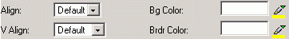

Lorsque la balise <TR> est sélectionnée, le panneau Configuration Rangée est affiché afin d'aider à la configuration des attributs de la rangée:
- Align – ce menu déroulant indique l'alignement horizontal du contenu de la rangée et il a les options suivantes: Défaut, Gauche, Droite, Centre;
- V Align – ce menu déroulant indique l'alignement vertical du contenu de la rangée et il a les options suivantes: Défaut, Haut, Bas, LigneBase, Centre;
- Couleur d'ar-pl - cette palette de couleurs aide à la sélection de la couleur d'arrière-plan pour une rangée sélectionnée. La couleur peut également être indiquée par la saisie de son code hexadécimale;
- Couleur Bordure – cette palette de couleurs aide à la sélection de la couleur de bordure pour une rangée sélectionnée. La couleur peut également être indiquée par la saisie de son code hexadécimale.